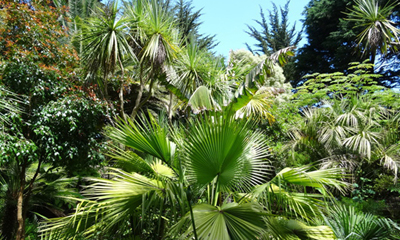

Chaque espace du jardin est une invitation au voyage : jardin Maori, terres australes, cacteraie, palmeraie, lande fleurie, jardin d’herbes… Le jardin est ainsi un véritable conservatoire de la biodiversité mondiale, en préservant de nombreuses plantes en voie d’extinction dans leurs milieux naturels.
Espèces tropicales

Des palmiers de tous horizons...
Nombreuses sont les plantes du parc provenant des régions au climat proche du bassin méditerranéen : Californie, Afrique Australe, Australie et Nouvelle-Zélande. La douceur du climat insulaire permet de conserver en plein air, une étonnante collection de palmiers.